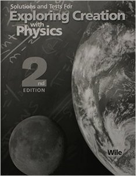
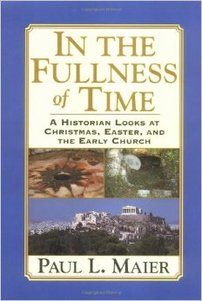
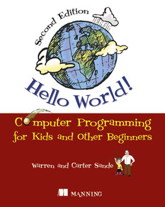

The Case for Christ Study Bible
My wonderful kids (read "wife") bought this for me for my birthday. It was a wonderful present and I very much appreciate it. However, have you ever tried to study the Bible? It's a pretty big book....or more accurately, collection of books, but that's semantics. There is some really great infomation in it explaining the text and pointing out...well, the case for Christ. I've placed this book at the top of my list not because it's the biggest book, but because I'm most disappointed in myself for not having stuck to studying it.
Exploring Creation with Physics...2nd Edition
I WAS GOING TO BE A PHYSICIST!!! 30+ years old is the WRONG time to decide to become a physicist. I love all those shows on The History Channel, Discovery, etc. that talk about the life, the universe, and everything. However, I just don't believe the universe and eveything in it is 13 billionish years old. I believe the story of Creation as it's laid out in Genisis. That's not a very popular viewpoint these days, but I don't care. I'm not looking to debate or argue or to have someone try and tell me I'm wrong.....whatever. I believe what I believe and if that offends, scares, or irritates someone, so be it. I purchased this book because all those shows that I loved about science, the universe, etc didn't mention God at all except maybe to say that He isn't welcome in a science class. This book, from what I read about it, approaches physics from a viewpoint of "Yes, God exists and made all this stuff" and I think that is a viewpoint in science that is a bit burried in our world today. I'm not a person that doesn't believe in science. I'm a person that believes scientists are people and people get things wrong.....often....regardless of how many pieces of paper they have framed on their wall or how popular their TV shows are. The reason this one is second is...well...it was the next book on my shelf that I grabbed and as a happy accident, it kind of goes along with the first.

Solutions and Tests For: Exploring Creation with Physics...2nd Edition
I think this one can go without much explanation.....

In The Fullness of Time
A Historian Looks at the Christmas, Easter, and the Early Church
Wow....by the look of things so far, one would think I'm a pastor's son...well I'm not. My mother-in-law gave me this book (or maybe she loaned it to me...hmmm..) while I was on jury duty (which lasted way too long for a malpractice suit). It seems like a really interesting read and I am very appreciative of my mother-in-lay for loaning (or was it giving?) it to me. I was actually reading it while on jury duty too. However, the book outlasted jury duty and I only got a few chapters in.

Teach Yourself Electricity and Electronics
This book kind of marks the beginning of what I'll refer to as "The Great Jason Reformation". It kind of marks a time in my life, not so long ago, that I really started trying to expand my career. You see, I served as an Avionics Technician in the USAF for 6 years. The Air Force taught me about electricity, electronics, electronic systems, avionics systems, and a whole slew of other "non-technical" stuff like excellence, integrity, and service before self. I got my A.A.S in Computer and Electronics Engineering Technology from ITT after my time in service. When I bought this book, I was wanting to expand my career in electronics and needed to "brush up" on everything. If you're looking for a good book to teach you about electronics, and you have the focus to stick with a book, this really is a good one. I think I lost interest in expanding my electronics career when I was turned down for a job that I could have done blind-folded. After that and finding that most electronics jobs in my area paid crap, I started looking elsewhere for career enhancement and put down this book.
The Associate CET Study Guide
This is a prep guide for the ETA ACET Exam (look it up). You can pretty much ctrl+c, ctrl+v from the above book.
Introduction to Computation and Programming Using Python
I have several books on the Python programming language. I'm not sure which came first though. I tried for a long time to find a good route to learning Python, I just never have quite "hit my stride" when it came to Python. I bought this one because it was recommended reading for a course I was taking on Edx.org...which I didn't finish either. Go figure. I remember I was doing really well in the course and something happened that caused me to miss a week or two. It's really hard to catch back up after that and I put the book and the course down. Very disappointed in myself. From what I have managed to do in Python, it really feels like a language I would enjoy working in and I kick myself often for not just sticking with it.

Hello World!
Computer Programming for Kids and Other Beginners
I bought this book a bit before Christmas and emailed my mother-in-law not to get me the Learn Python the Hard Way book....I guess she missed that email. You'll find out why I say (or type) that in a few moments. I was enjoying this book. To this day I can't remember why I stopped persuing it. I'm assuming I took too much time away from it and just never went back. It's really hard to start something "back up" once you've been away for a while. From the articles I did complete, I can say I liked it. Another instance of me not learning Python.
Learn Python the Hard Way
Holy Crap! I totally suck at learning Python for some reason. This book was on my wish list for Christmas. I sent that list to my mother-in-law. She is very good at buying you gifts you ask for. A lot of people, myself included, often stray from the lists. My mother-in-law does that also, but she's really good at making sure to get us at least one thing we ask for. My in-laws are great. I couldn't ask for better ones. Always helpful and supportive and they seemingly love spending all of their money on "us kids". If for no other reason, I wish I had completed this book just because my mother-in-law loved me enough to get it for me.
Programming the Raspberry Pi
Getting Started with Python
Three in a row col-sm-12 ! This is a bit depressing honestly. I flat out told my wife that if she didn't get me a Raspberry Pi for Christmas, that I wouldn't love her any more. So she got me one and bought my love for another year. Too bad I'm a terrible husband and never did any development with it. I imaged two SD cards, one with Google Coder and the other with Raspberian, and that's about it. This came at the same time as the two previous Python books. I was trying really hard to learn Python. I still would really like to know and use that language. I can't explain why.
Python Pocket Reference
By now you must be thinking, "Wow what a totally worthless door knob". And you would probably be col-sm-4. However, in my own defense, this was also a Christmas present from the same year as the previous items. This gift happened to be from my awesome sister-in-law and her awesome Puerto Rican husband, Raul. (Yo bro!) Raul cheated (like guys do) and asked me what to get him....I did the same thing. I got a pocket reference and he got an old-timey "safety" razor. One of those you stick the flimsy double-sided razors in. Anyways, I didnt' stick with the other Python books, so why would I need a pocket reference, col-sm-4? I'm such a worthless bastard.